빛이 시료와 만나면 반사, 흡수, 투과, 산란, 형광이 일어난다(p.3 그림). Raman은 이 중 산란의 일부다.
| 구분 | 내용 |
|---|---|
| 장점 | ① 물을 용매로 쓸 수 있다. [보충] 물은 IR을 세게 흡수하지만 Raman 산란은 약하다. ② 신호가 가시·근적외 영역에 있어 유리나 석영 셀을 쓸 수 있다. |
| 단점 | ① 1960년대 레이저가 나오기 전에는 신호가 약해 널리 쓰이지 않았다. ② 시료나 불순물의 형광이 신호를 가린다. 그래서 들뜸 파장을 분석물의 흡수 띠에서 멀리 떨어진 곳으로 고른다. |
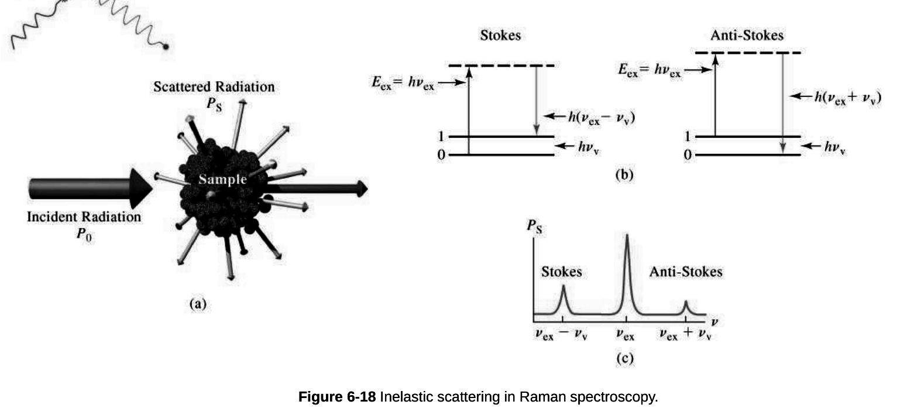
Fig 6-18·18-1 (a) 시료에 들어온 빛이 모든 각도로 산란한다. (b) 빛이 분자를 가상 준위(virtual state) j로 올렸다가 다시 광자를 낸다. (c) 스펙트럼: 가운데 νex(Rayleigh), 왼쪽 νex−νv(Stokes), 오른쪽 νex+νv(anti-Stokes).| 산란 | 과정 |
|---|---|
| Rayleigh | v=0에서 가상 준위로 갔다가 v=0으로 돌아온다. 에너지 hνex 그대로. |
| Stokes | v=0에서 시작해 v=1로 끝난다. 산란광 에너지 h(νex−νv), 낮은 진동수. |
| anti-Stokes | v=1에서 시작해 v=0으로 끝난다. 산란광 에너지 h(νex+νv), 높은 진동수. |
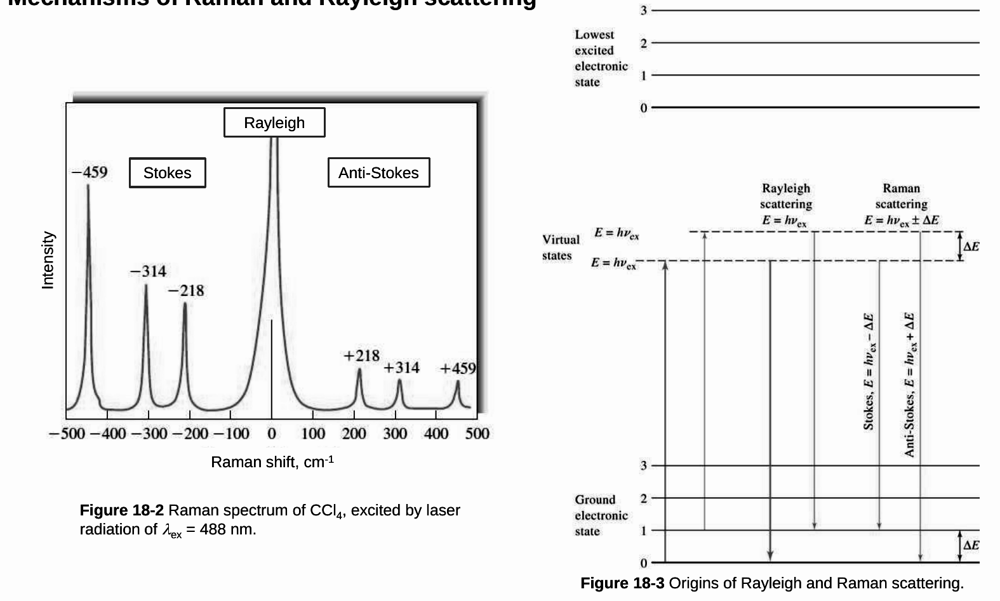
Fig 18-2 488 nm로 들뜬 CCl₄의 Raman 스펙트럼. Stokes −218, −314, −459 cm⁻¹과 anti-Stokes +218, +314, +459 cm⁻¹이 Rayleigh 양쪽에 대칭으로 나온다. anti-Stokes가 더 약하다. Fig 18-3 Rayleigh와 Raman 산란의 준위. 가상 준위는 실제 전자 들뜬 상태보다 낮다.상온에서는 분자 대부분이 v=0에 있다(Boltzmann 분포). 그래서 v=0에서 시작하는 Stokes가 v=1에서 시작하는 anti-Stokes보다 훨씬 세다. 보통 Stokes 쪽을 측정한다. [보충] 온도가 오르면 v=1 분자가 늘어 anti-Stokes가 세진다.
E 빛의 전기장, m 유도 쌍극자 모멘트, α 결합의 편극률(polarizability).
α₀ 평형 거리 req에서의 편극률, r 순간 원자 간 거리, rm 평형에서 최대로 벗어난 거리, νv 진동 진동수.
cos x cos y = [cos(x+y) + cos(x−y)]/2를 써서 유도한다.
Stokes·anti-Stokes 항에는 ∂α/∂r가 곱해져 있다. 진동할 때 편극률이 변하지 않으면(∂α/∂r = 0) 이 두 항이 0이 되어 Raman 산란이 없다. 이것이 Raman 활성 조건이다. Rayleigh 항은 α₀만 있으면 늘 존재한다.
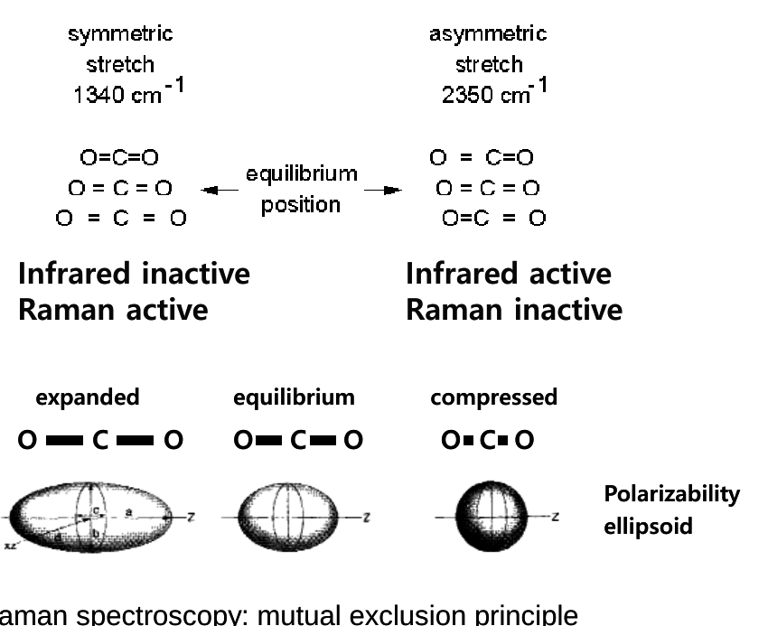
p.10 CO₂의 대칭 신축(1340 cm⁻¹)은 IR 불활성·Raman 활성, 비대칭 신축(2350 cm⁻¹)은 IR 활성·Raman 불활성. 아래: 늘어날 때·평형·줄어들 때의 편극률 타원체 크기가 다르다.| CO₂ 진동 | IR | Raman |
|---|---|---|
| 대칭 신축 1340 | 불활성. 두 C=O 쌍극자가 늘 상쇄되어 알짜 쌍극자 변화 없음 | 활성. 분자 전체가 늘었다 줄었다 하며 편극률 타원체 크기가 변함 |
| 비대칭 신축 2350 | 활성. 한쪽이 늘고 한쪽이 줄어 쌍극자가 생겼다 사라짐 | 불활성. 한쪽 증가와 다른 쪽 감소가 상쇄되어 편극률 변화가 (1차로) 없음 |
| 굽힘 667 | 활성 (겹침 2개) | 불활성 |
[보충] 경향: 대칭적이고 무극성인 결합(C=C, C≡C, S−S, N=N, 고리의 대칭 신축)은 Raman에서 세다. 극성 결합(C=O, O−H, N−H)은 IR에서 세다.
CO₂ 비대칭 신축이 4장(p.13)에는 2330, 이 장(p.10)에는 2350 cm⁻¹이다. 교재 일반값은 2349 cm⁻¹ 근처다. 굽힘도 4장 677, [보충] 일반값 667 cm⁻¹이다.
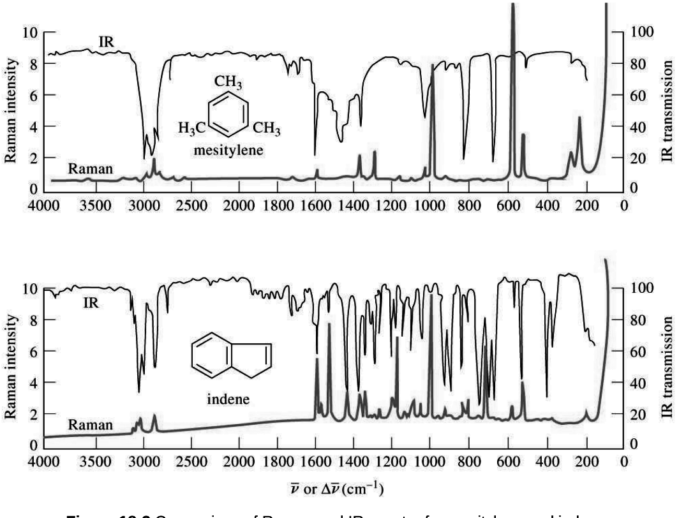
Fig 18-3 메시틸렌과 인덴의 Raman(아래 선)과 IR(위 선, 투과) 비교. 같은 위치에 나오는 띠도 있지만 세기가 매우 다르다.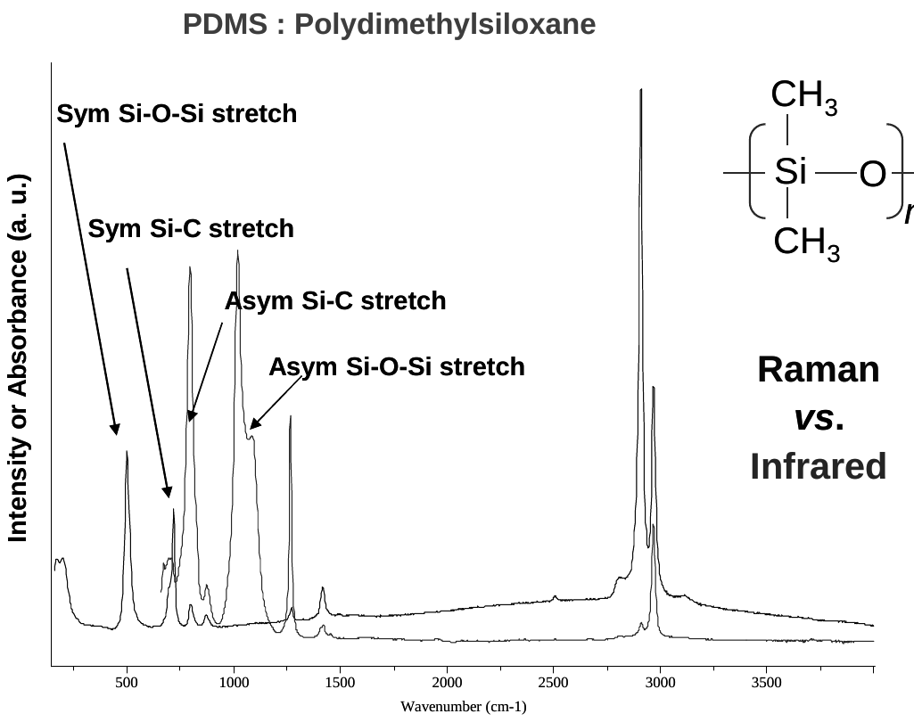
p.13 PDMS(폴리다이메틸실록세인): 대칭 Si−O−Si 신축과 대칭 Si−C 신축은 Raman에서 세고, 비대칭 Si−C 신축과 비대칭 Si−O−Si 신축은 IR에서 세다.ν⁴ 법칙 때문에 짧은 파장 레이저가 신호는 세다. 하지만 짧은 파장은 형광과 광분해를 일으키기 쉬워 실제로는 근적외 레이저(785, 1064 nm)를 많이 쓴다. 신호 세기와 형광 회피 사이의 절충이다(5-7).
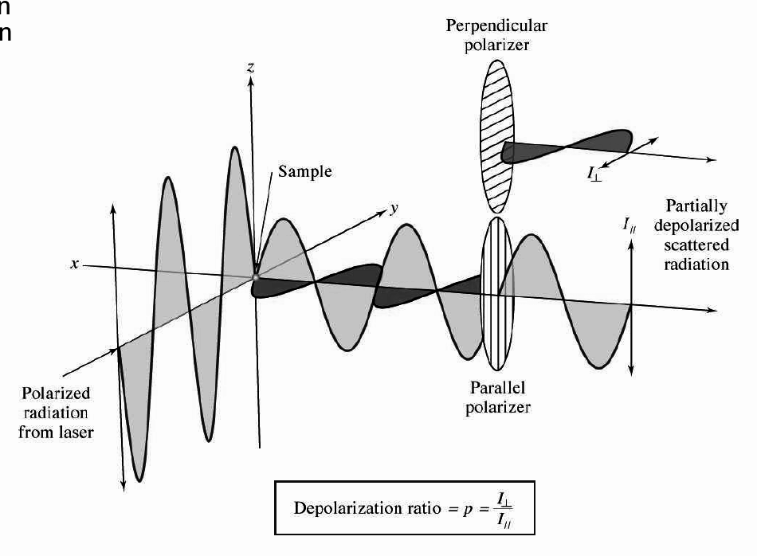
Fig 18-5 편광 레이저로 시료를 비추고 산란광을 평행·수직 편광판으로 나눠 잰다.I⊥ 입사 편광에 수직인 성분의 산란 세기, I∥ 평행인 성분의 산란 세기.
[보충] 해석: p < 0.75이면 편광된 띠(polarized)로 대칭 진동(완전 대칭 모드)이다. p = 0.75이면 탈편광된 띠(depolarized)로 비대칭 진동이다. 예: CCl₄의 459 cm⁻¹(대칭 신축) p ≈ 0.005, 218·314 cm⁻¹ p ≈ 0.75. 그래서 p를 재면 띠가 어떤 대칭의 진동인지 알 수 있다.
[보충] 대칭 신축은 분자 전체가 고르게 부풀어 편극률 타원체가 모양을 유지한 채 크기만 변한다. 그래서 산란광이 입사 편광 방향을 거의 그대로 유지해 I⊥가 작다. 비대칭 진동은 타원체 모양이 바뀌어 편광 방향이 흩어진다.
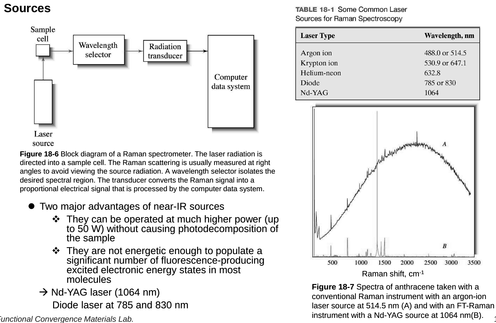
Fig 18-6 Raman 분광기 블록도: 레이저 → 시료 셀 → 파장 선택기 → 변환기 → 컴퓨터. 광원 빛을 보지 않으려고 보통 직각(90°)으로 산란광을 잰다. Table 18-1 레이저: Ar 이온 488.0·514.5, Kr 이온 530.9·647.1, He-Ne 632.8, 다이오드 785·830, Nd-YAG 1064 nm. Fig 18-7 안트라센: 514.5 nm Ar 레이저(A)는 큰 형광 배경이 생기지만, 1064 nm Nd-YAG FT-Raman(B)은 형광이 없다.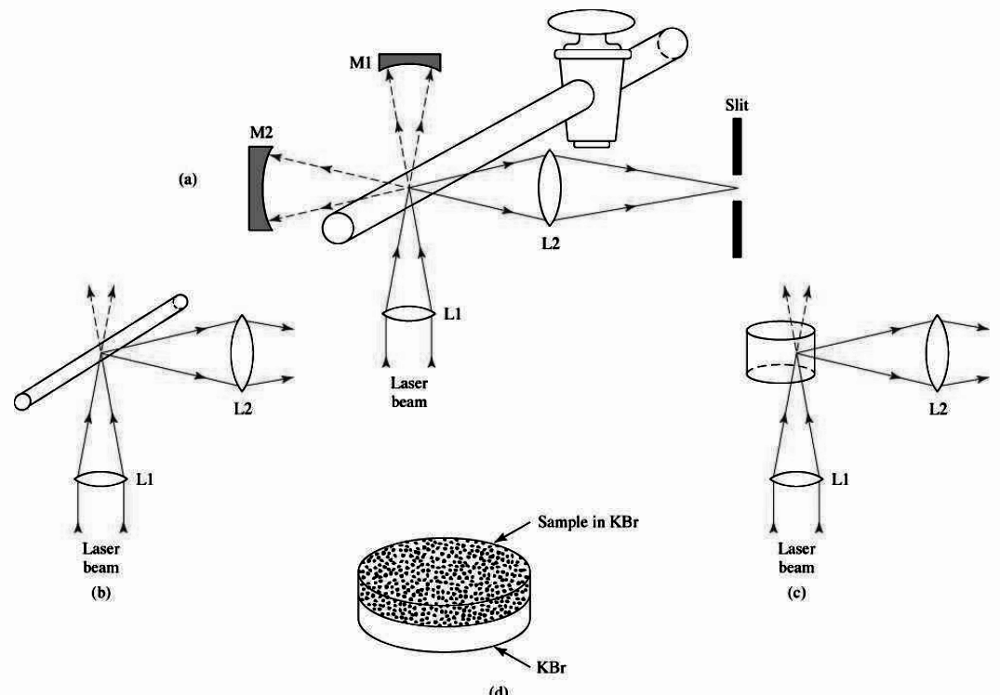
Fig 18-8 (a) 기체 셀 (b) 모세관 (c) 원통형 셀 (d) KBr 펠렛.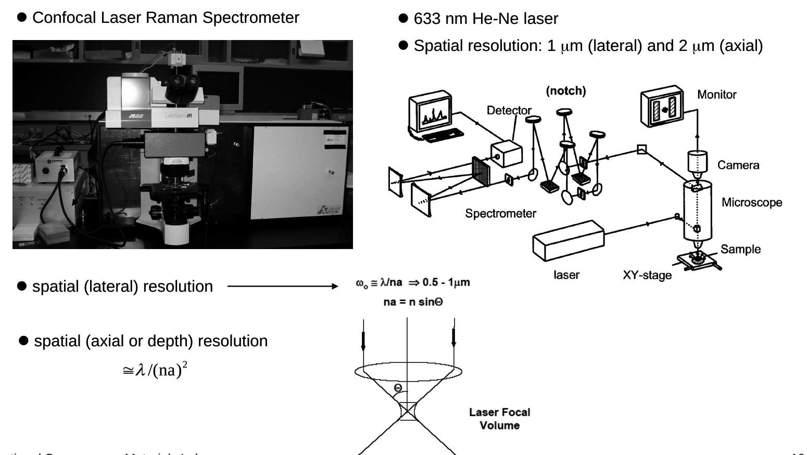
공초점 레이저 Raman 분광기(633 nm He-Ne). 공간 분해능 가로 1 μm, 깊이 2 μm.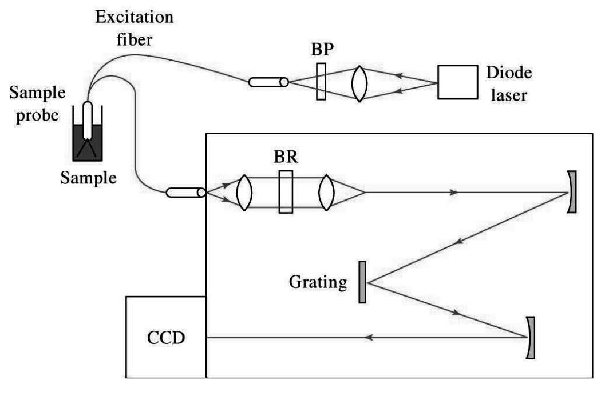
Fig 18-11 광섬유 Raman: 띠통과 필터(BP)로 레이저 선 하나만 고르고, 띠제거 필터(BR, notch)로 Rayleigh 산란을 줄인 뒤, 회절발 분광기와 CCD로 잰다.Rayleigh 산란은 Raman보다 약 10⁶배 세다. 이것을 지우지 않으면 바로 옆의 약한 Raman 띠가 묻힌다. 그래서 notch(띠제거) 필터가 필수다.
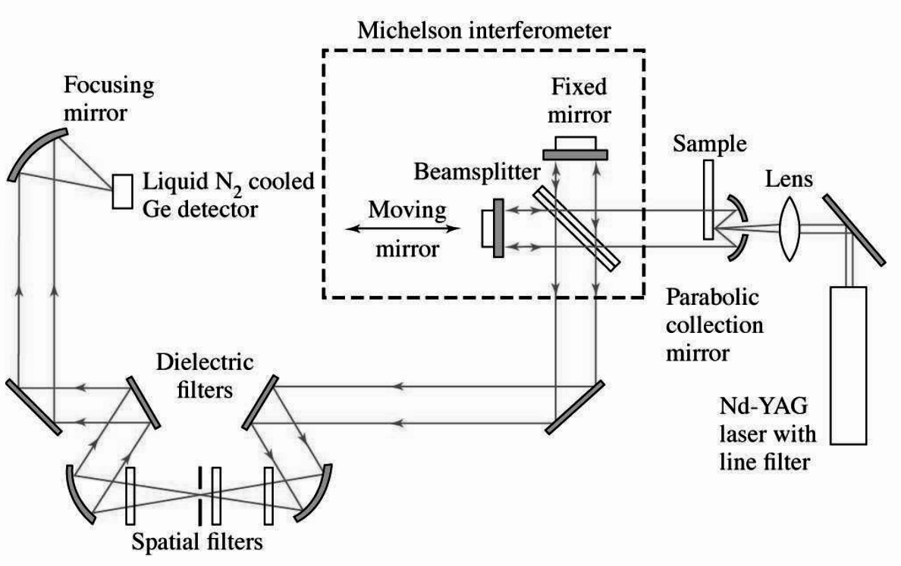
Fig 18-12 FT-Raman: Nd-YAG 레이저가 시료를 지나고 산란광이 Michelson 간섭계로 들어간다. 출력은 유전체·공간 필터로 미광과 Rayleigh 산란을 지우고 액체 질소로 냉각한 Ge 검출기에 모인다.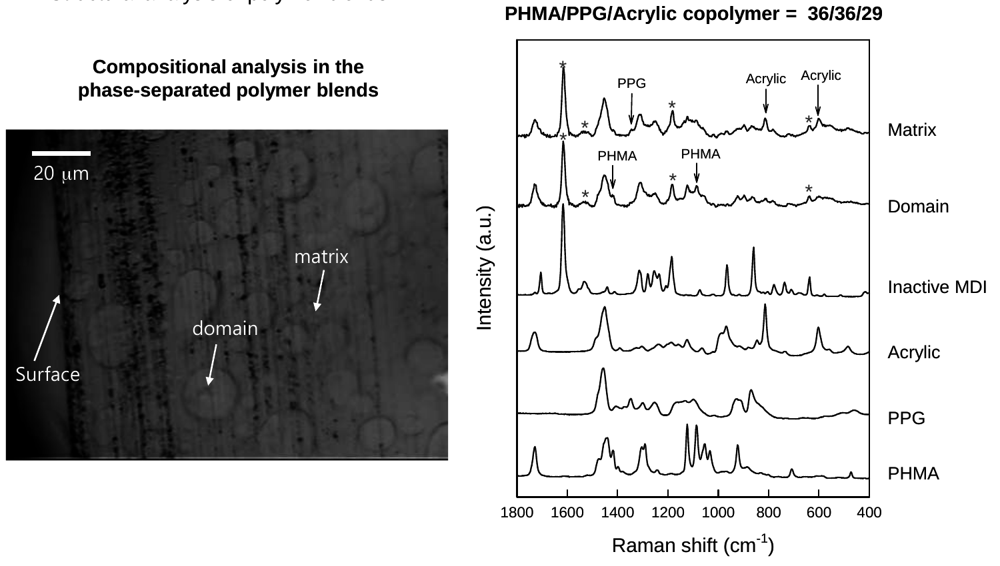
p.23 상분리 고분자 블렌드(PHMA/PPG/아크릴 = 36/36/29): 매트릭스와 도메인의 Raman 스펙트럼을 각 성분과 비교해 조성을 분석한다.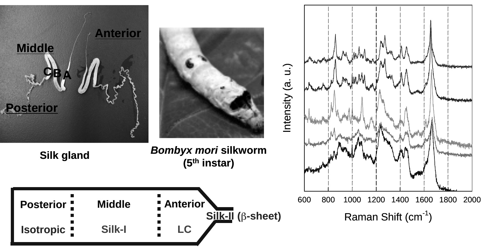
p.24 누에 비단샘: 뒤쪽(등방성) → 가운데(Silk-I) → 앞쪽(액정) → 실(Silk-II, β-sheet)로 갈수록 구조 변화가 Raman 띠로 보인다.p.25 PTT 섬유 구조 분석: 편광 Raman으로 C=O 신축 띠(1720 cm⁻¹ 근처)를 나눠 사슬 배향 분포 함수를 구한다.
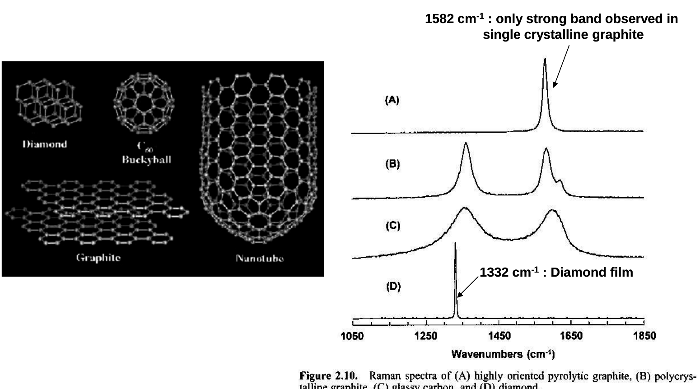
p.26 탄소 동소체: (A) 고배향 흑연 1582 cm⁻¹ 하나(단결정 흑연의 유일한 센 띠) (B) 다결정 흑연 (C) 유리질 탄소 (D) 다이아몬드 막 1332 cm⁻¹.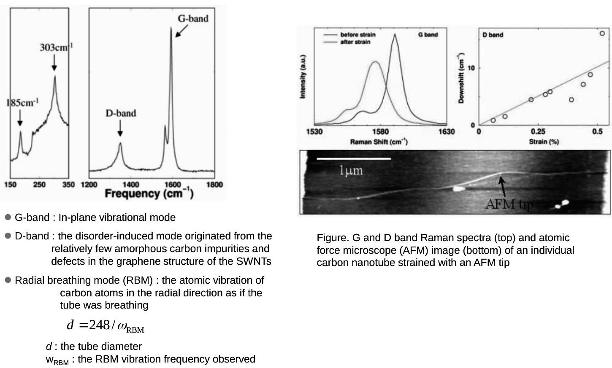
p.27 단일벽 탄소나노튜브(SWNT): RBM(185, 303 cm⁻¹), D 띠, G 띠. 오른쪽은 AFM 탐침으로 당긴 나노튜브의 G·D 띠가 변형에 따라 낮은 파수로 이동하는 모습.| 띠 | 뜻 |
|---|---|
| G band | 면 내(in-plane) 진동 모드. 약 1580 cm⁻¹. |
| D band | 무질서 유도 모드. 비정질 탄소 불순물과 그래핀 구조 결함에서 생긴다. 약 1350 cm⁻¹. [보충] D/G 세기비가 결함 정도의 지표다. |
| RBM | 방사 호흡 모드. 튜브가 숨 쉬듯 탄소 원자가 반지름 방향으로 진동한다. d = 248/ωRBM(d 지름 nm, ωRBM cm⁻¹)으로 지름을 구한다. |
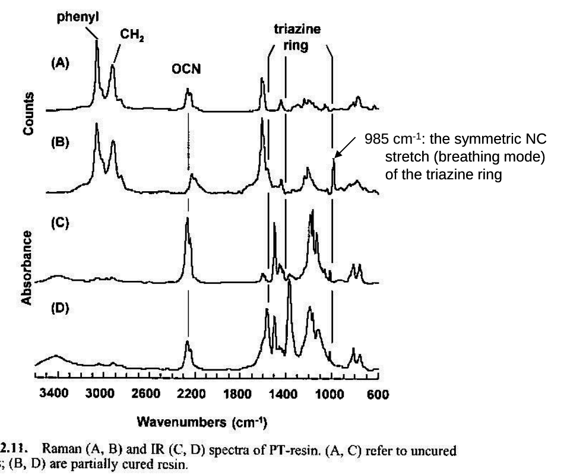
p.28 PT 수지 경화: Raman(A, B)과 IR(C, D). 경화가 진행되면 OCN 띠가 줄고, 트라이아진 고리의 대칭 N−C 신축(호흡 모드) 985 cm⁻¹가 Raman에 새로 나타난다.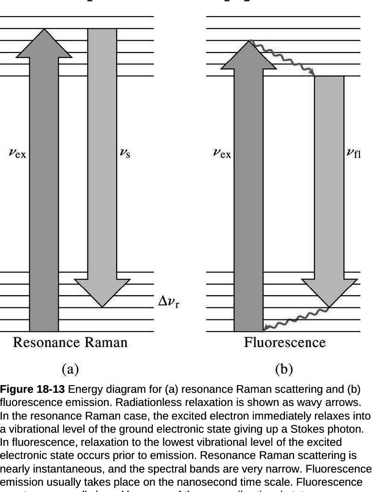
Fig 18-13 (a) 공명 Raman (b) 형광. 물결 화살표는 비복사 이완.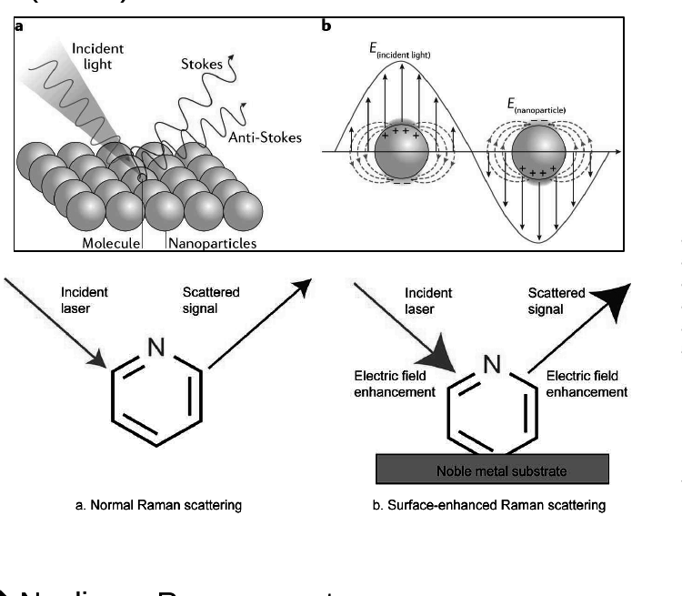
SERS: 금속 나노입자 표면 근처에서 전기장이 크게 강해진다. (a) 보통 Raman (b) 귀금속 기판에 흡착한 피리딘의 표면 증강 Raman.| 구별 기준 | IR 흡수 | Raman 산란 |
|---|---|---|
| 활성 조건 | 쌍극자 모멘트 변화 | 편극률 변화 |
| 상호작용 | 같은 진동수 빛을 흡수 | 가상 준위로 갔다가 산란 |
| 사용 빛 | IR | 가시·근적외 레이저 |
| 셀·용매 | NaCl·KBr 창, 물 곤란 | 유리·석영 셀, 물 가능 |
| CO₂ 대칭 신축 | 불활성 | 활성(1340) |
| 세기와 농도 | 로그(Beer) | 정비례(형광과 비슷) |
| 방해 | 물 흡수 | 형광 |
| 구별 기준 | A | B |
|---|---|---|
| 산란 진동수 | Stokes: νex−νv, 셈 | anti-Stokes: νex+νv, 약함 |
| 성질 주체 | 편극률: 분자(결합 변형) | 편광: 빛(진동 평면) |
| 탈편극률 | p < 0.75: 대칭 진동 | p = 0.75: 비대칭 진동 |
| 탄소 띠 | G: 면 내 진동, 약 1580 | D: 결함, 약 1350 |
| 속도·폭 | 공명 Raman: 순간적, 좁음 | 형광: ns, 넓음 |
| 필터 | BP: 레이저 선 하나 고름 | BR(notch): Rayleigh 제거 |